Code
library(tidyverse)
library(tidymodels)Warning: package 'scales' was built under R version 4.3.2Code
library(kableExtra)
theme_set(theme_minimal())In this chapter, we consider multiple regression and other models in which there are more than one predictor (or \(X\)) variable. This extends what we covered in the last chapter where we examined one predictor to multiple predictors. Once again our focus is on finding the estimates of coefficients or parameters in multiple linear regression models by the method of least squares. For this we assume that
The predictor (or explanatory or controlled or covariate) variables \(X_i\) \((i=1,2,...,p)\) are known without error.
The mean or expected value of the dependent (or response) variable \(Y\) is related to the \(X_i\) \((i=1,2,...,p)\) according to a linear expression
\(E(y\mid x)=a+ b_1 x_l + b_2 x_2 + ....+ b_p x_p\)
i.e. a straight line (for one \(X\) variable), a plane (for two \(X\) variables) or a hyperplane (for more than two \(X\) variables). This means that the fitted model can be written as
fit = \(a+ b_1 x_l + b_2 x_2 + ....+ b_p x_p\).
There is random (unpredictable, unexplained) variability of \(Y\) about the fitted model. That is,
\(y\) = fit + residual.
In order to apply statistical inferences to a model, a number of assumptions need to be made. To be able to form \(t\) and \(F\) statistics, we assume that
The variability in \(Y\) about the line (plane etc) is constant and independent of the \(X\) variables.
The variability of \(Y\) follows a Normal distribution. That is, the distribution of \(Y\) (given certain values of the \(X_i\) variables) is Normal.
Given (different) outcomes of the \(X\) variables, the corresponding \(Y\) variables are independent of one another.
We will continue to use the data set horsehearts of the weights of horses’ hearts and other related measurements.
With one explanatory variable scatterplots and correlation coefficients provided good starting points for exploring relationships between the explanatory and response variables. This is even more relevant with two or more explanatory variables. For the horses’ hearts data, there are six potential explanatory variables; namely EXTDIA, EXTSYS, INNERDIA, INNERSYS, OUTERDIA and OUTERSYS. These measurements of heart width are made of the exterior width, inner wall and outer wall at two different phases, the diastole phase and the systole phase. So a matrix of scatter plots (or matrix plot) of these variables will be useful for exploratory analysis.
It is also a good idea to form the simple correlation coefficients between each pair of explanatory variables and between each explanatory variable and the response variable \(Y\), the weight of the horse’s heart. These correlation coefficients can be displayed in a correlation matrix as shown in Figure 1.
library(tidyverse)
library(tidymodels)Warning: package 'scales' was built under R version 4.3.2library(kableExtra)
theme_set(theme_minimal())download.file(
url = "http://www.massey.ac.nz/~anhsmith/data/horsehearts.RData",
destfile = "horsehearts.RData")
load("horsehearts.RData")library(GGally)Registered S3 method overwritten by 'GGally':
method from
+.gg ggplot2ggpairs(horsehearts)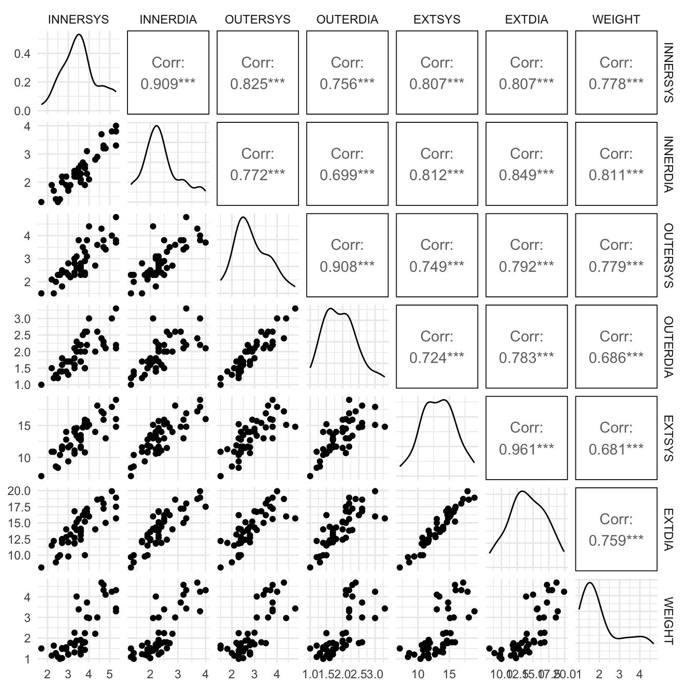
It is also possible to obtain the \(p\)-values for all the simple correlation coefficients displayed above and test whether these are significantly different from zero.
A number of facts about the data emerge from our EDA. All of the correlation coefficients are positive and reasonably large which indicates that with large hearts all the lengths increase in a fairly uniform manner. The predictor variables are also highly inter-correlated. This suggests that not all of these variables are needed but only a subset of them.
The usual tidy() function output of multiple regression weight on all of the available (six) predictors is shown in Table 1.
full.reg <- lm(WEIGHT~ ., data=horsehearts)
tidy(full.reg) # or summary(full.reg) | term | estimate | std.error | statistic | p.value |
|---|---|---|---|---|
| (Intercept) | -1.631 | 0.488 | -3.343 | 0.002 |
| INNERSYS | 0.232 | 0.308 | 0.753 | 0.456 |
| INNERDIA | 0.520 | 0.395 | 1.314 | 0.197 |
| OUTERSYS | 0.711 | 0.329 | 2.164 | 0.037 |
| OUTERDIA | -0.557 | 0.451 | -1.236 | 0.224 |
| EXTSYS | -0.300 | 0.135 | -2.227 | 0.032 |
| EXTDIA | 0.339 | 0.148 | 2.296 | 0.027 |
This regression model is known as the full regression because we have included all the predictors in our model. The R syntax ~. means that we are placing all variables in the dataframe except the one selected as the response variable. We note that the slope coefficients of the predictors INNERDIA, INNERSYS, and OUTERDIA are not significant at 5% level. This confirms that we do not need to place all six predictors in the model but only a subset of them.
The highly correlated predictor INNERDIA (see Figure 1) is also found to have a insignificant coefficient in Table 1. This is somewhat surprising and casts doubts on the suitability of the full regression fit. If two or more explanatory variables are very highly correlated (i.e. almost collinear), then we deal with multicollinearity. The estimated standard errors of the regression coefficients will be inflated in the presence of multicollinearity. As result, the \(t\)-value will become small leading to a model with many insignificant coefficients. Multicollinearity does not affect the residual standard error much. The obvious remedy for multicollinearity is that one or more of the highly correlated variables can be dropped. Measures such as the Variance Inflation factor (VIF) are available to study the effect of multicollinearity. A VIF factor of more than 5 for a coefficient means that its variance is artificially inflated by the high correlation among the predictors. For the full regression model, the VIF factors are obtained using the car package function vif() and shown as Table 2.
car::vif(full.reg)| x | |
|---|---|
| INNERSYS | 8.77 |
| INNERDIA | 8.60 |
| OUTERSYS | 7.71 |
| OUTERDIA | 6.66 |
| EXTSYS | 16.05 |
| EXTDIA | 22.00 |
All the VIF values are over 5, and hence the full regression model must be simplified dropping one or more predictors.
Let us now compare the fit and summary measures of the simple regression lm(WEIGHT ~ INNERDIA, data=horsehearts) with the full regression lm(WEIGHT ~ ., data=horsehearts). Figure 2 compares the actual and fitted \(Y\) values for these two models.
library(modelr)
full.reg <- lm(WEIGHT ~ ., data=horsehearts)
simple.reg <- lm(WEIGHT ~ INNERDIA, data=horsehearts)
hhpred <- horsehearts |>
gather_predictions(full.reg, simple.reg) |>
mutate(residuals=WEIGHT-pred)
hhpred |>
ggplot() +
aes(x=WEIGHT, y=pred, colour=model) +
geom_point() +
geom_abline(slope=1, intercept = 0, alpha=.5) +
theme(aspect.ratio = 1) +
ylab("Predicted WEIGHT") +
ggtitle("Comparison of model predictions") 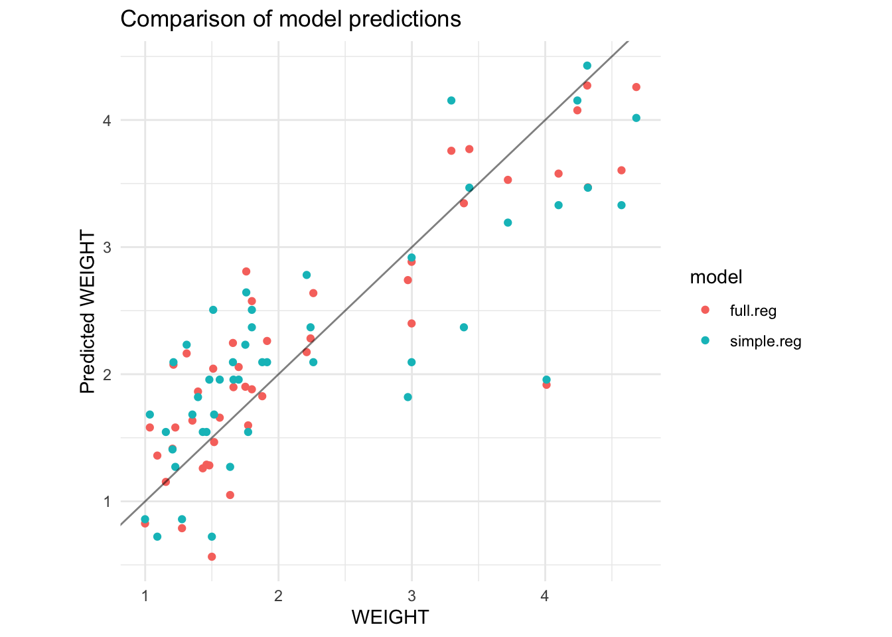
Both the simple and full regression models give similar predictions when the horses heart weight is below 2.5 kg, but the simple regression residuals are bit bigger for larger hearts.
We are rather hesitant to make unique claims about any particular subset of predictors based on the correlation matrix or based on the significance of the coefficients from the multiple regression output. In forthcoming sections, methods to decide on a subset of these variables will be explained, but first we look at the issues involved when predictor variables are correlated to each other.
The variation in a variable can be measured by its sum of squares. In this section, we illustrate this variation by the area of a circle. For brevity, we denote the Total Sum of Squares, the Regression Sum of Squares and the Error or residual Sum of Squares by SST, SSR and SSE respectively. In Figure 3, the circle is labelled \(y\) and represents the Sum of Squares for all the \(y\) observations, that is, SST.
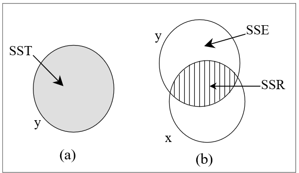
For the full regression of horse heart weight, we obtain the ANOVA output using the command
anova(full.reg)Let’s take a look at the sums of squares table.
SS <- anova(full.reg) |>
tidy() |>
select(term:sumsq) |>
janitor::adorn_totals()| term | df | sumsq |
|---|---|---|
| INNERSYS | 1 | 34.40 |
| INNERDIA | 1 | 3.53 |
| OUTERSYS | 1 | 2.76 |
| OUTERDIA | 1 | 0.13 |
| EXTSYS | 1 | 0.06 |
| EXTDIA | 1 | 1.90 |
| Residuals | 39 | 14.07 |
| Total | 45 | 56.85 |
Now let’s calculate the Sums of Squares Total (SST), Error (SSE), and Regression (SSR).
tibble(
SST = SS |> filter(term=="Total") |> pull(sumsq),
SSE = SS |> filter(term=="Residuals") |> pull(sumsq),
SSR = SST - SSE
)# A tibble: 1 × 3
SST SSE SSR
<dbl> <dbl> <dbl>
1 56.8 14.1 42.8In Figure 3(a), SST = SSR + SSE = 32.731 + 24.115 = 56.845. Consider now the straight line relationship between \(y\) and one response variable \(x\). This situation is illustrated in Figure 3(b). The shaded overlap of the two circles illustrates the variation in \(y\) about the mean explained by the variable \(x\), and this shaded area represents the regression sum of squares SSR. The remaining area of the circle for \(y\) represents the unexplained variation in \(y\) or the residual sum of squares SSE. Note that the circle or Venn diagrams represent SS only qualitatively (not to scale). The variation in \(y\) is thus separated into two parts, namely SST = SSR + SSE.
Notice that we are not very interested in the unshaded area of the circle representing the explanatory variable, \(x\); it is the variation in the response variable, \(y\), which is important. Also notice that the overlapping circles indicate that the two variables are correlated, that is the correlation coefficient, \(r_{xy}\), is not zero. The shaded area is related to
\(R^2\) = proportion of the variation of \(y\) explained by \(x\) = SSR/SST = 32.731/56.845 = 0.576 = \(r_{xy}^2\).
Note from Figure 1 that the correlation between WEIGHT and EXTDIA is 0.759 and 0.759 squared equals 0.576.
The situation becomes more interesting when a second explanatory variable is added to the model as illustrated by Figure 4.

In the following discussion, the variable EXTDIA is denoted by \(x_1\) and OUTERDIA as \(x_2\). The total overlap of (\(x_1\) and \(x_2\)) and \(y\) will depend on the relationship of \(y\) with \(x_1\), \(y\) with \(x_2\), and the correlation of \(x_1\) and \(x_2.\)
In Figure 4(a), as the circles for \(x_1\) and \(x_2\) do not overlap, this represents a correlation coefficient between these two variables of zero. In this special case, \[R^{2} =\frac{\text {SSR}(x_1)+\text {SSR} (x_2)}{\text {SST}} =r_{x_{1} y}^{2} +r_{x_{2} y}^{2}.\]
Here, SSR(\(x_1\)) represents the Regression SS when \(y\) is regressed on \(x_1\) only. SSR(\(x_2\)) represents the Regression SS when \(y\) is regressed on \(x_2\) only. The unshaded area of \(y\) represents SSE, the residual sum of squares, which is the sum of squares of \(y\) unexplained by \(x_1\) or \(x_2\). The special case of uncorrelated explanatory variables is in many ways ideal but it usually only occurs when \(x_1\) and \(x_2\) are constructed to have zero correlation (which means that the situation, known as orthogonality, is usually confined to experimental designs). There is an added bonus when \(x_1\) and \(x_2\) have zero correlation. In this situation the fitted model is
\[\hat{y} = a + b_1 x_1 + b_2x_2\]
where \(b_1\) and \(b_2\) take the same values as in the separate straight line models \(\hat{y} = a + b_1x_1\) and \(\hat{y} =a + b_2x_2.\)
However in observational studies the correlations between predictor variables will usually be nonzero. The circle diagram shown in Figure 4(b) illustrates the case when \(x_1\) and \(x_2\) are correlated. In this case \[R^{2} <\frac{\text {SSR}(x_1) + \text {SSR}(x_2) } {\text {SST}}\] and the slope coefficients for both \(x_1\) and \(x_2\) change when both these variables are included in the regression model.
Figure 4(c) gives the extreme case when \(x_1\) and \(x_2\) have nearly perfect correlation. If the correlation between \(x_1\) and \(x_2\) is perfect, then the two variables will be said to be collinear. If two or more explanatory variables are very highly correlated (i.e. almost collinear), then we deal with multicollinearity.
From Figure 3 and Figure 4, it is clear that for correlated variables, the variation (SS) explained by a particular predictor cannot be independently extracted (due to the commonly shared variation). Hence, we consider how much a predictor explains additionally given that there are already certain predictors are in the model. The additional overlap due to \(x_{2}\) with \(y\) after \(x_{1}\), known as the additional SSR or Sequential SS is an important idea in model building. The additional SSR is known as Type I sums of squares in the statistical literature.
Note that we can also define the additional variation in \(y\) explained by \(x_{1}\) after \(x_{2}\). It is important to note that in general the additional SSR depends on the order of placing the predictors. This order does not have any effect on the coefficient estimation, standard errors etc.
The significance of the additional variation explained by a predictor can be tested using a \(t\) or \(F\) statistic. Consider the simple regression model of WEIGHT on EXTDIA. Suppose we decided to add the explanatory variable OUTERDIA to the model, i.e. regress WEIGHT on two explanatory variables EXTDIA and OUTERDIA. Is this new model a significant improvement on the existing one? For testing the null hypothesis that the true slope coefficient of OUTERDIA in this model is zero, the \(t\)-statistic is 1.531 (see output below).
twovar.model <- lm(WEIGHT~ EXTDIA+OUTERDIA, data=horsehearts)
twovar.model |> tidy()# A tibble: 3 × 5
term estimate std.error statistic p.value
<chr> <dbl> <dbl> <dbl> <dbl>
1 (Intercept) -1.97 0.551 -3.57 0.000885
2 EXTDIA 0.226 0.0614 3.68 0.000637
3 OUTERDIA 0.522 0.341 1.53 0.133 The \(t\) and \(F\) distributions are related by the equation \(t^{2} =F\) when the numerator df is just one for the \(F\) statistic. Hence 1.532 = 2.34 is the \(F\) value for testing the significance of the additional SSR due to OUTERDIA. In other words, the addition of OUTERDIA to the simple regression model does not result in a significant improvement in the sense that the reduction in residual SS (= 1.247) as measured by the \(F\) value of 2.34 is not significant (\(p\)-value being 0.133).
onevar.model <- lm(WEIGHT~ EXTDIA, data=horsehearts)
twovar.model <- lm(WEIGHT~ EXTDIA+OUTERDIA, data=horsehearts)
anova(onevar.model, twovar.model)Analysis of Variance Table
Model 1: WEIGHT ~ EXTDIA
Model 2: WEIGHT ~ EXTDIA + OUTERDIA
Res.Df RSS Df Sum of Sq F Pr(>F)
1 44 24.115
2 43 22.867 1 1.2472 2.3453 0.133Although OUTERDIA is correlated with WEIGHT, it also has high correlation with EXTDIA. In other words, the correlation matrix gives us some indication of how many variables might be needed in a multiple regression model, although by itself it cannot tell us what combination of predictor variables is good or best.
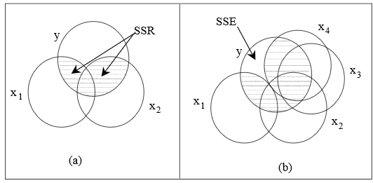

Figure 5 and Figure 6 summarise the following facts:
When there is only one explanatory variable, \(R^2\) = SSR/SST equals the square of the correlation coefficient between that variable and the dependent variable. Therefore if only one variable is to be chosen, it should have the highest correlation with the response variable, \(Y\).
When variables are added to a model, the regression sum of squares SSR will increase and the residual or error sum of squares SSE will reduce. The opposite is true if variables are dropped from the model. This fact follows from Figure 6.
The other side of the coin to the above remark is that as additional variables are added, the Sums of Squares for residuals, SSE, will decrease towards zero as also shown in Figure 6(c).
The overlap of circles in suggests that these changes in both SSR and SST will lessen as more variables are added, see Figure 5(b).
Following on from the last two notes, as \(R^2\) = SSR/SST, \(R^2\) will increase monotonically towards 1 as additional variables are added to the model. (monotonically increasing means that it never decreases although it could remain the same). This is indicated by Figure 6(a). If variables are dropped, then \(R^2\) will monotonically decrease.
Against the above trends, the graph of residual mean square in Figure 6(b) reduces to a minimum but may eventually start to increase if enough variables are added. The residual sum of squares SSE decreases as variables are added to the model (see Figure 5(b)). However, the associated df values also decrease so that the residual standard deviation decreases at first and then starts to increase as shown in Figure 6(b). (Note that the residual standard error \(s_{e}\) is the square root of the residual mean square
\[s_{e}^{2} =\frac{{\text {SSE}}}{{\text {error degrees of freedom}}},\]
denoted as MSE in Figure 5(b)). After a number of variables have been entered, the additional amount of variation explained by them slows down but the degrees of freedom continues to change by 1 for every variable added, resulting in the eventual increase in residual mean square. Note that the graphs in Figure 5 are idealised ones. For some data sets, the behaviour of residual mean square may not be monotone.
Notice that the above trends will occur even if the variables added are garbage. For example, you could generate a column of random data or a column of birthdays of your friends, and this would improve the \(R^2\) but not the adjusted \(R^2\). The adjusted \(R^2\) makes adjustment for the degrees of freedom for the SSR and SSE, and hence reliable when compared to the unadjusted or multiple \(R^2\). The residual mean square error also partly adjusts for the drop in the degrees of freedom for the SSE and hence becomes an important measure. The addition of unimportant variables will not improve the adjusted \(R^2\) and the mean square error \(s_{e}^{2}\).
The R anova function anova() calculates sequential or Type-I SS values.
Type-II sums of squares is based on the principle of marginality. Type II SS correspond to the R convention in which each variable effect is adjusted for all other appropriate effects.
Type-III sums of squares is the SS added to the regression SS after ALL other predictors including an intercept term. This SS however creates theoretical issues such as violation of marginality principle and we should avoid using this SS type for hypothesis tests.
The R package car has the function Anova() to compute the Type II and III sums of squares. Try-
full.model <- lm(WEIGHT~ ., data=horsehearts)
anova(full.model)
library(car)
Anova(full.model, type=2)
Anova(full.model, type=3)For the horsehearts data, a comparison of the Type I and II sums squares is given below:
full.model <- lm(WEIGHT~ ., data=horsehearts)
anova1 <- full.model |>
anova() |>
tidy() |>
select(term, "Type I SS" = sumsq)
anova2 <- full.model |>
Anova(type=2) |>
tidy() |>
select(term, "Type II SS" = sumsq)
type1and2 <- full_join(anova1, anova2, by="term")
type1and2| term | Type I SS | Type II SS |
|---|---|---|
| INNERSYS | 34.40 | 0.20 |
| INNERDIA | 3.53 | 0.62 |
| OUTERSYS | 2.76 | 1.69 |
| OUTERDIA | 0.13 | 0.55 |
| EXTSYS | 0.06 | 1.79 |
| EXTDIA | 1.90 | 1.90 |
| Residuals | 14.07 | 14.07 |
When predictor variables are correlated, it is difficult to assess their absolute importance and the importance of a variable can be assessed only relatively. This is not an issue with the most highly correlated predictor in general.
The first step before selection of the best subset of predictors is to study the correlation matrix. For horses’ heart data, the explanatory variable which is most highly correlated with \(y\) (WEIGHT) is \(x_2\) (INNERDIA) having a correlation coefficient of 0.811 (see Figure 1). This means that INNERDIA should be the single best predictor. We may guess that the next best variable to join INNERDIA. This would be \(x_3\) (OUTERSYS) but the correlations between \(x_3\) and the other explanatory variables clouds the issue. In other words, the significance or otherwise of a variable in a multiple regression model depends on the other variables in the model.
Consider the regression of horses’ heart WEIGHT on INNERDIA, OUTERSYS, and EXTSYS.
threevar.model <- lm(WEIGHT ~ INNERDIA + OUTERSYS + EXTSYS,
data=horsehearts)
threevar.model |> tidy()| term | estimate | std.error | statistic | p.value |
|---|---|---|---|---|
| (Intercept) | -1.341 | 0.474 | -2.828 | 0.007 |
| INNERDIA | 0.958 | 0.262 | 3.649 | 0.001 |
| OUTERSYS | 0.597 | 0.203 | 2.940 | 0.005 |
| EXTSYS | -0.034 | 0.063 | -0.534 | 0.596 |
The coefficient of EXTSYS is not significant at 5% level. However coefficient of EXTSYS was found to be significant in the full regression. The significance of INNERDIA coefficient has also changed. This example shows that we cannot fully rely on the \(t\)-test and discard a variable because its coefficient is insignificant.
There are various search methods for finding the best subset of explanatory variables. We will consider stepwise procedures, namely algorithms that follow a series of steps to find a good set of predictors. At each step, the current regression model is compared with competing models in which one variable has either been added (forward selection procedures) or removed (backward elimination procedures). Some measure of goodness is required so that the variable selection procedure can decide whether to switch to one of the competing models or to stop at the current best model. Of the two procedures, backward elimination has two advantages. One is computational: step 2 of the forward selection requires calculation of a large number of competing models whereas step 2 of the backward elimination only requires one. The other is statistical and more subtle. Consider two predictor variables \(x_{i}\) and \(x_{j}\) and suppose that the forward selection procedure does not add either because their individual importance is low. It may be that their joint influence is important, but the forwards procedure has not been able to detect this. In contrast, the backward elimination procedure starts with all variables included and so is able to delete one and keep the other.
A stepwise regression algorithm can also combine both the backward elimination and forward selection procedures. The procedure is the same as forward selection, but immediately after each step of the forward selection algorithm, a step of backward elimination is carried out.
Variable selection solely based \(p\) values is preferred only for certain applications such as analysis of factorial type experimental data where response surfaces are fitted. The base R does model selection based on \(AIC\) which has to be as minimum as possible for a good model. We shall now discuss the concept of \(AIC\) and other model selection criteria.
One way to balance model fit with model complexity (number of parameters) is to choose the model with the minimal value of Akaike Information Criterion (AIC for short, derived by Prof. Hirotugu Akaike as the minimum information theoretic criterion):
\[AIC = n\log \left( \frac{SSE}{n} \right) + 2p\]
Here \(n\) is the size of the data set and \(p\) is the number of variables in the model. A model with more variables (larger value of \(p\)) will produce a smaller residual sum of squares SSE but is penalised by the second term.
Bayesian Information Criterion (BIC) (or also called Schwarz’s Bayesian criterion, SBC) places a higher penalty that depends on \(n\), the number of observations. As a result \(BIC\) fares well for selecting a model that explains the relationships well while \(AIC\) fares well when selecting a model for prediction purposes.
A number of corrections to \(AIC\) and \(BIC\) have been proposed in the literature depending on the type of model fitted. We will not study them in this course.
An alternative measure called Mallow’s \(C_{p}\) index is also available using which we may judge whether the variables at the current step (smaller model) are excessive or short. If unimportant variables are added to the model, then the variance of the fitted values will increase. Similarly if important variables are added, then the bias of the fitted values will decrease. The \(C_{p}\) index, which balances the variance and bias, is given by the formula \[C_{p} = \frac{{\text {SS Error for Smaller Model}}}{{\text {Mean Square Error for full regression}}} -(n-2p)\] where \(p\) = no. of estimated coefficients (including the intercept) in the smaller model and \(n\) = total number of observations. The most desired value for the \(C_{p}\) index is the number of parameters (including the \(y\)-intercept) or just smaller. If \(C_p>>p\), the model is biased. On the other hand, if \(C_p<<p\), the model associated variability is too large. The trade-off between bias and variance is best when \(C_{p}=p\). But the \(C_{p}\) index is not useful in judging the adequacy of the full regression model because it requires an assumption on what constitutes the full regression. This is not an issue with the \(AIC\) or \(BIC\) criterion.
For prediction modelling, the following three measures are popular and the modelr package will extract these prediction accuracy measures and many more.
Mean Squared Deviation (MSD):
MSD is the mean of the squared errors (i.e., deviations).
\[MSD = \frac{\sum \left({\text {observation-fit}}\right)^2 }{{\text {number of observations}}},\]
MSD is also sometimes called the Mean Squared Error (MSE). Note that while computing the MSE, the divisor will be the degrees of freedom and not the number of observations. The square-root of MSE is abbreviated as RMSE, and commonly employed as a measure of prediction accuracy.
Mean Absolute Percentage Error (MAPE):
MAPE is the average percentage relative error per observation. MAPE is defined as
\[MAPE =\frac{\sum \frac{\left|{\text {observation-fit}}\right|}{{\text {observation}}} }{{\text {number of observations}}} {\times100}.\]
Note that MAPE is unitless.
Mean Absolute Deviation (MAD):
MAD is the average absolute error per observation and also known as MAE (mean absolute error). MAD is defined as
\[MAD =\frac{\sum \left|{\text {observation-fit}}\right| }{{\text {number of observations}}}.\]
For the horsehearts data, stepwise selection can be implemented using many R packages including MASS, car, leaps HH caret, and SignifReg. Examples given below are based on the horses hearts data.
step() function performs a combination of both forward and backward regression. This method favours a model with four variables: WEIGHT ~ INNERDIA + OUTERSYS + EXTSYS + EXTDIAfull.model <- lm(WEIGHT ~ ., data = horsehearts)
stats::step(full.model)
# or MASS::stepAIC(full.model)
# or step(full.model, trace = FALSE) stepAIC() function from the MASS package can also be used instead of the step() function. Try-library(MASS, exclude="select")
stepAIC(full.reg, direction="backward", trace = FALSE)
stepAIC(full.reg, direction="both", trace = FALSE)
null.model <- lm(WEIGHT~ 1, data=horsehearts)
stats::step(
full.reg,
scope = list(
lower = null.model,
upper = ~INNERSYS+INNERDIA+OUTERSYS+OUTERDIA+EXTSYS+EXTDIA
),
direction = "forward")SignifReg package allows variable selection under various criteria. Try-library(SignifReg)
SignifReg(full.reg,
direction = "backward",
criterion = "BIC",
adjust.method = "none")
SignifReg(full.reg,
direction = "backward",
criterion = "r-adj",
adjust.method = "none")
SignifReg(full.reg,
direction = "backward",
criterion = "p-value",
adjust.method = "none")
SignifReg(full.reg,
direction = "both",
criterion = "BIC",
adjust.method = "none")
SignifReg(full.reg,
direction = "both",
criterion = "r-adj",
adjust.method = "none")
SignifReg(full.reg,
direction = "both",
criterion = "p-value",
adjust.method = "none")The forward selection procedure also picks only just two variables as seen from the following output:
full.model <- lm(WEIGHT ~ ., data=horsehearts)
stmdl <- SignifReg(full.reg,
direction = "both",
criterion = "AIC",
adjust.method = "none")
stmdl |> tidy()| term | estimate | std.error | statistic | p.value |
|---|---|---|---|---|
| (Intercept) | -1.512 | 0.468 | -3.230 | 0.002 |
| INNERDIA | 0.799 | 0.267 | 2.987 | 0.005 |
| OUTERSYS | 0.493 | 0.204 | 2.415 | 0.020 |
| EXTSYS | -0.236 | 0.122 | -1.938 | 0.059 |
| EXTDIA | 0.250 | 0.130 | 1.920 | 0.062 |
For the full regression model, the \(AIC\) is -40.5 and it drops to -42.35 for the four variable model. That is, according to the AIC criterion, a further reduction in model size does not compensate for the decline in model fit as measured by the AIC. The \(C_{p}\) index also recommends the four variable model because for the \(C_{p}\) value of 4.9 is closer to 5, the number of model coefficients.
R package caret enables this. For the horses heart data, the following codes perform the backward regression.library(caret)
library(leaps)
set.seed(123)
fitControl <- trainControl(
method = "repeatedcv",
number = 5,
repeats = 100
)
leapBackwardfit <- train(
WEIGHT ~ .,
data = horsehearts,
trControl = fitControl,
method = "leapBackward"
)
summary(leapBackwardfit)Note that an asterisk in the row means that a particular variable is included in the step. The model in the last step excludes INNERSYS and OUTERDIA. On the other hand, the forward regression includes only two variables namely INNERDIA and OUTERSYS. We can also directly use the leaps package without cross validation.
fitControl <- trainControl(
method = "repeatedcv",
number = 5,
repeats = 100
)
leapForwardfit <- train(
WEIGHT ~ .,
data = horsehearts,
trControl = fitControl,
method = "leapForward"
)
summary(leapForwardfit)Subset selection object
6 Variables (and intercept)
Forced in Forced out
INNERSYS FALSE FALSE
INNERDIA FALSE FALSE
OUTERSYS FALSE FALSE
OUTERDIA FALSE FALSE
EXTSYS FALSE FALSE
EXTDIA FALSE FALSE
1 subsets of each size up to 2
Selection Algorithm: forward
INNERSYS INNERDIA OUTERSYS OUTERDIA EXTSYS EXTDIA
1 ( 1 ) " " "*" " " " " " " " "
2 ( 1 ) " " "*" "*" " " " " " " An exhaustive screening of all possible regression models (and hence the name best subsets regression) can also be done using software. For example, there are 6 predictor variables in the horses’ hearts data. If we fix the number of predictors as 3, then \(\small {\left(\begin{array}{c} {6} \\ {3} \end{array}\right)} = 20\) regression models are possible. One may select the ‘best’ 3-variable model based on criteria such as AIC, \(C_{p}\), \(R_{adj}^{2}\) etc. Software must be employed to perform the conventional stepwise regression procedures. Software algorithms give one or more best candidate models fixing the number of variables in each step.
On the basis of our analysis on the horses’ hear data, we might decide to recommend the model with predictor variables EXTDIA, EXTSYS, INNERDIA and OUTERSYS. In particular if the model is to be used for describing relationships then we would tend to include more variables. For prediction purposes, however, a simpler feasible model is preferred and in this case we may opt for the smaller model with only INNERDIA and OUTERSYS. See Table 4 produced using the following R codes:
library(leaps)
library(HH)
library(kableExtra)
b.model <- regsubsets(WEIGHT ~ ., data = horsehearts) |>
summaryHH()
b.model |>
kable(digits = 3) |>
kable_styling(bootstrap_options = "basic", full_width = F)| model | p | rsq | rss | adjr2 | cp | bic | stderr |
|---|---|---|---|---|---|---|---|
| INNERD | 2 | 0.658 | 19.450 | 0.650 | 11.923 | -41.677 | 0.665 |
| INNERD-OUTERS | 3 | 0.715 | 16.173 | 0.702 | 4.838 | -46.335 | 0.613 |
| INNERD-OUTERS-OUTERD | 4 | 0.718 | 16.043 | 0.698 | 6.477 | -42.878 | 0.618 |
| INNERD-OUTERS-EXTS-EXTD | 5 | 0.741 | 14.739 | 0.715 | 4.862 | -42.949 | 0.600 |
| INNERD-OUTERS-OUTERD-EXTS-EXTD | 6 | 0.749 | 14.272 | 0.718 | 5.566 | -40.602 | 0.597 |
| INNERS-INNERD-OUTERS-OUTERD-EXTS-EXTD | 7 | 0.753 | 14.067 | 0.714 | 7.000 | -37.437 | 0.601 |
Sometimes theory may indicate that a certain explanatory variable should be included in the model (e.g. due to small sample size). If this variable is found to make an insignificant contribution to the model, then one should exclude the variable when the model is to be used for prediction but if the model is to be used for explanation purposes only then the variable should be included. Other considerations such as cost and time may also be taken into account. For every method or algorithm, one could find peculiar data sets where it fouls up. The moral – be alert and don’t automatically accept models thrown up by a program. Note there is never one right answer as different methods and different criteria lead to different models.
Variable selection procedures can be a valuable tool in data analysis, particularly in the early stages of building a model. At the same time, they present certain dangers. There are several reasons for this:
These procedures automatically snoop though many models and may select ones which, by chance, happen to fit well.
These forward or backward stepwise procedures are heuristic (i.e., shortcut) algorithms, which often work very well but which may not always select the best model for a given number of predictors (here best may refer to adjusted \(R^2\)-values, or AIC or some other criterion).
Automatic procedures cannot take into account special knowledge the analyst may have about the data. Therefore, the model selected may not be the best (or make sense) from a practical point of view.
Methods are available that shrink coefficients towards zero. The least squares approach minimises the residual sums of squares or RSS without placing any constraint on the coefficients. The shrinkage methods, which place a constraint on the coefficients, work well when there are large numbers of predictors. A ridge regression shrinks the coefficients towards zero but in relation each other. On the other hand, (Least Absolute Selection and Shrinkage Operator) lasso regression shrinks some of coefficients to zero which means these predictors can be dropped. Note that the ridge regression does not completely remove predictors. By shrinking large coefficients, we obtain a model with higher bias but lower variance. This process is known as regularisation in the literature (not covered in this course).
Consider the pinetree data set which contains the circumference measurements of pine trees at four positions. The simple regression of the top circumference on the first (bottom) circumference, the fit is \({\text {Top = -6.33 + 0.763 First}}\). This fit is satisfactory on many counts (highly significant \(t\) and \(F\) values, high \(R^{2}\) etc); see Table 5 and Table 6.
download.file(
url = "http://www.massey.ac.nz/~anhsmith/data/pinetree.RData",
destfile = "pinetree.RData")
load("pinetree.RData")pine1 <- lm(Top ~ First, data = pinetree)
pine1 |> tidy()# A tibble: 2 × 5
term estimate std.error statistic p.value
<chr> <dbl> <dbl> <dbl> <dbl>
1 (Intercept) -6.33 0.765 -8.28 2.10e-11
2 First 0.763 0.0240 31.8 2.20e-38| term | estimate | std.error | statistic | p.value |
|---|---|---|---|---|
| (Intercept) | -6.334 | 0.765 | -8.278 | 0 |
| First | 0.763 | 0.024 | 31.779 | 0 |
pine1 |>
glance() |>
select(adj.r.squared, sigma, statistic, p.value, AIC, BIC)| adj.r.squared | sigma | statistic | p.value | AIC | BIC |
|---|---|---|---|---|---|
| 0.945 | 1.291 | 1009.896 | 0 | 204.85 | 211.133 |
The residual plot, shown as Figure 7, still provides an important clue that we should try a polynomial (cubic) model.
library(ggfortify)Registered S3 method overwritten by 'ggfortify':
method from
autoplot.glmnet parsnipautoplot(pine1, which=1, ncol=1)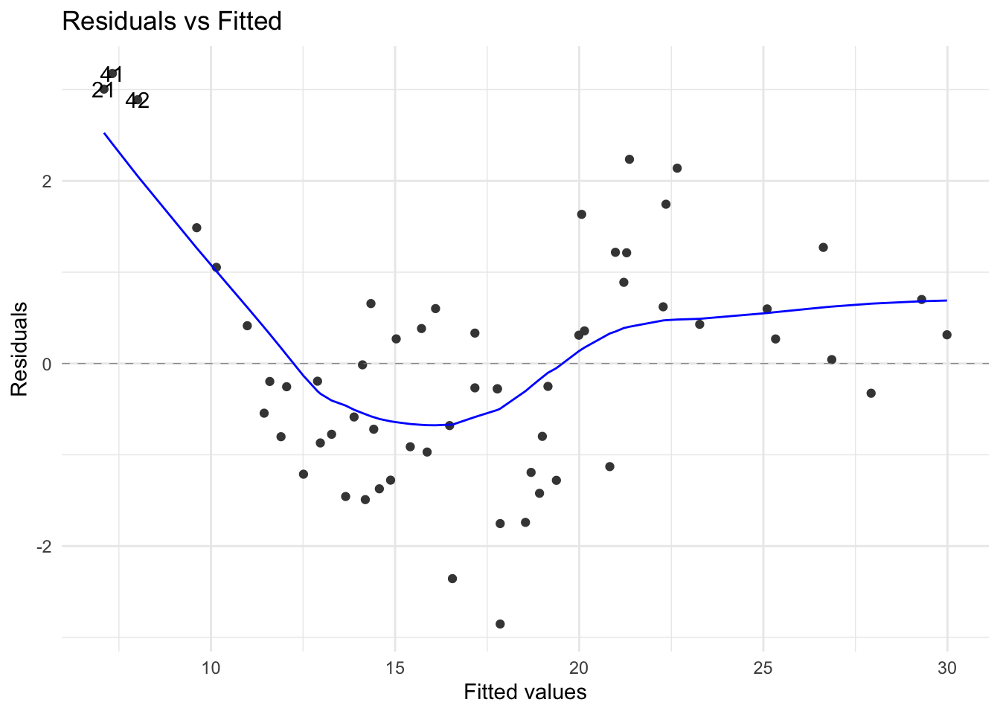
pine3 <- lm(Top ~ poly(First, 3, raw=TRUE),
data = pinetree)Table 7 shows the significance results for the polynomial model \({\text Top=44.1 - 3.97First+0.142}\left({\text First}\right)^{2} - 0.00135\left(\text {First}\right)^{3}\). This model has achieved a good reduction in the residual standard error and improved AIC and BIC (see Table 8). The residual diagnostic plots are somewhat satisfactory. The Scale-Location plot suggests that there may be a subgrouping variable. The fitted model can be further improved using the Area categorical factor. This topic, known as the analysis of covariance will be covered later on. Note that both models are satisfactory in terms of Cook’s distance. A few leverage or \(h_{ii}\) values cause concern seen in Figure 8 but we will ignore them given the size of the data set.
pine3 |> tidy() | term | estimate | std.error | statistic | p.value |
|---|---|---|---|---|
| (Intercept) | 44.1213 | 7.0391 | 6.2680 | 0 |
| poly(First, 3, raw = TRUE)1 | -3.9716 | 0.6951 | -5.7141 | 0 |
| poly(First, 3, raw = TRUE)2 | 0.1416 | 0.0221 | 6.3939 | 0 |
| poly(First, 3, raw = TRUE)3 | -0.0014 | 0.0002 | -5.9510 | 0 |
pine3 |>
glance() |>
select(adj.r.squared, sigma, statistic, p.value, AIC, BIC) | adj.r.squared | sigma | statistic | p.value | AIC | BIC |
|---|---|---|---|---|---|
| 0.97 | 0.89 | 725.98 | 0 | 162.46 | 172.93 |
autoplot(pine3, which=5, ncol=1)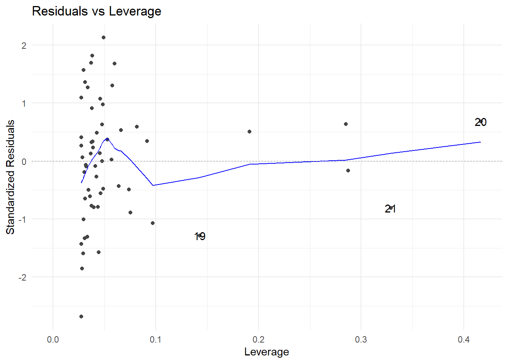
How quadratic and quartic models fare compared to the cubic fit is also of interest. Try the R code given below and compare the outputs:
summary(lm(WEIGHT ~ OUTERDIA, data = horsehearts))
summary(lm(WEIGHT ~ poly(OUTERDIA,2, raw=T), data = horsehearts))
summary(lm(WEIGHT ~ poly(OUTERDIA,3, raw=T), data = horsehearts))
summary(lm(WEIGHT ~ poly(OUTERDIA,4, raw=T), data = horsehearts))The key model summary measures of the four polynomial models are shown in Table 9. As expected, the \(R^2\) value increases, although not by much in this case, as polynomial terms are added. Note that the multicollinearity among the polynomial terms renders all the coefficients of the quadratic regression insignificant at 5% level. For the cubic regression model, all the coefficients are significant. It is usual to keep adding the higher order terms until there is no significant increase in the additional variation explained (measured by the \(t\) or \(F\) statistic). Alternatively we may use the AIC criterion. In the above example, when the quartic term OUTERDIA\(^4\) is added, the AIC slightly increases to 114.99 (from 114.65) suggesting that we may stop with the cubic regression.
modstats <- list(
straight.line = lm(WEIGHT ~ OUTERDIA,
data = horsehearts),
quadratic = lm(WEIGHT ~ poly(OUTERDIA,2,raw=T),
data=horsehearts),
cubic = lm(WEIGHT~ poly(OUTERDIA,3, raw=T),
data=horsehearts),
quartic = lm(WEIGHT~ poly(OUTERDIA,4, raw=T),
data=horsehearts)
) |>
enframe(
name = "model",
value = "fit"
) |>
mutate(glanced = map(fit, glance)) |>
unnest(glanced) |>
select(model, r.squared, adj.r.squared, sigma,
statistic, AIC, BIC)
modstats| model | r.squared | adj.r.squared | sigma | statistic | AIC | BIC |
|---|---|---|---|---|---|---|
| straight.line | 0.47 | 0.46 | 0.83 | 39.13 | 117.01 | 122.50 |
| quadratic | 0.48 | 0.46 | 0.83 | 19.87 | 118.17 | 125.49 |
| cubic | 0.54 | 0.51 | 0.79 | 16.38 | 114.65 | 123.79 |
| quartic | 0.56 | 0.51 | 0.79 | 12.81 | 114.99 | 125.96 |
It is desirable to keep the coefficients the same when higher order polynomial terms are added. This can be done using orthogonal polynomial coefficients (we will skip the theory) for which we will avoid the argument raw within the function poly(). Try-
lm(Top ~ poly(First,1), data=pinetree)
lm(Top ~ poly(First,2), data=pinetree)
lm(Top ~ poly(First,3), data=pinetree)Stepwise methods are not employed for developing polynomial models as it would not be appropriate (say) to have the linear and cubic terms but drop the quadratic one. The coefficient terms for the higher order terms become very small. It is also possible that the coefficient estimation may be incorrect due to ill conditioning of the data matrix which is used obtain the model coefficients. Some authors recommend appropriate rescaling of the polynomial terms (such as subtracting the mean etc) to avoid such problems.
The use of polynomials greater than second-order is discouraged. Higher-order polynomials are known to be extremely volatile; they have high variance, and make bad predictions. If you need a more flexible model, then it is generally better to use some sort of smoother than a high-order polynomial.
In fact, a popular method of smoothing is known as “local polynomial fitting”, or spline smoothing. Local polynomials are sometimes preferred to a single polynomial regression model for the whole data set. An example based on the pinetree data is shown in Figure 9 which uses the bs() function from the splines package.
pinetree |>
ggplot() +
aes(First, Top) +
geom_point() +
geom_smooth(method = lm,
formula = y ~ splines::bs(x, 3))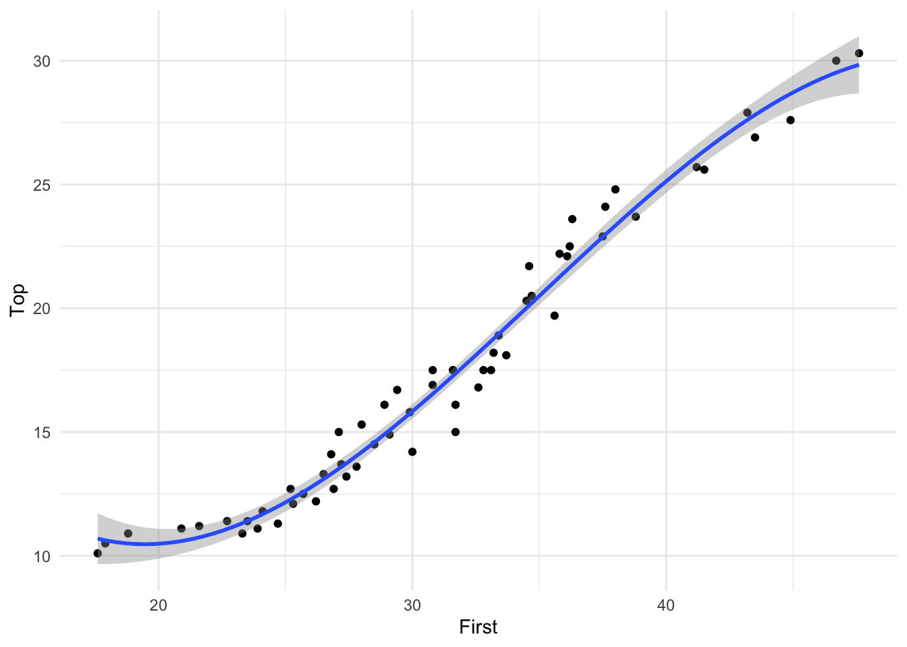
The difficult task in statistical modelling is the assessment of the underlying model structure or alternatively knowing the true form of the relationship. For example, the true relationship between \(Y\) and \(X\) variables may be nonlinear. If we incorrectly assume a multiple linear relationship instead, a good model may not result. The interaction between the explanatory variables is also important and this topic is covered in a different section. We may also fit a robust linear model in order to validate the ordinary least squares fit. For the horses heart data, OUTERSYS and EXTDIA were short-listed as the predictors of WEIGHT using the AIC criterion. This least squares regression model can be compared to the robust versions as shown in Figure 10.
hh_lm <- lm(WEIGHT ~ OUTERSYS + EXTDIA, data=horsehearts)
hh_rlm <- MASS::rlm(WEIGHT ~ OUTERSYS + EXTDIA, data=horsehearts)
hh_lmrob <- robustbase::lmrob(WEIGHT ~ OUTERSYS + EXTDIA, data=horsehearts)
horsehearts |>
gather_predictions(hh_lm, hh_rlm, hh_lmrob) %>%
ggplot(aes(x=WEIGHT, y=pred, colour=model)) +
geom_point() +
geom_abline(slope=1, intercept = 0) +
ylab("Predicted WEIGHT") + theme_minimal() +
ggtitle("Comparison of model predictions")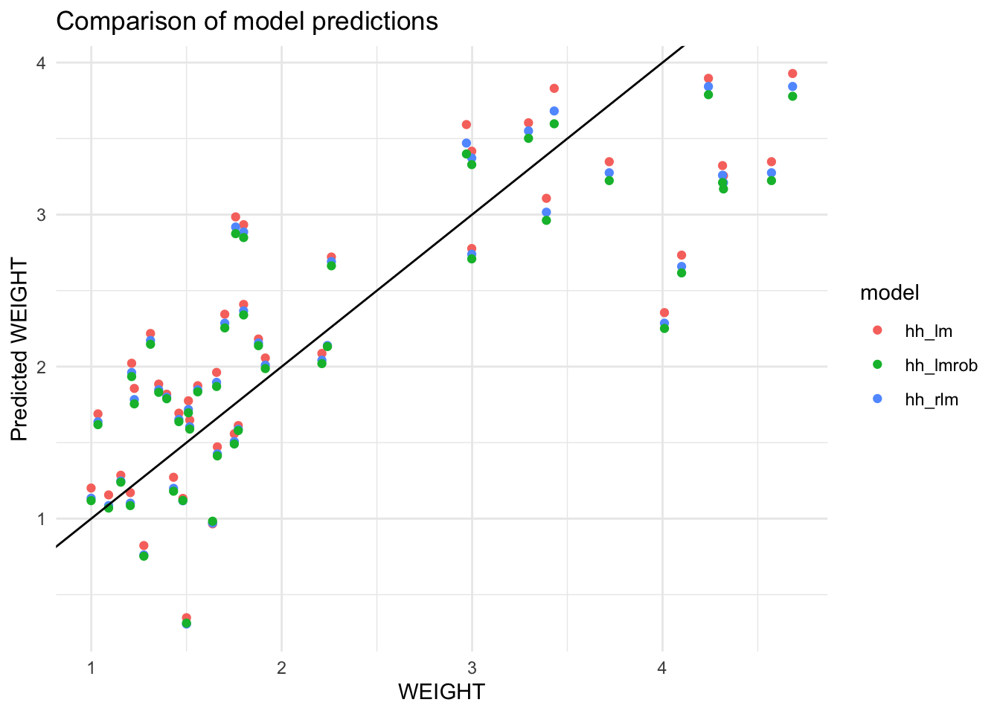
Figure 10 shows that the scatter plot of predicted versus actual \(Y\) values for the three fitted models which confirms that these models perform very similarly. We may also extract measures such as mean absolute percentage error (MAPE) or residual SD or root mean square error (RMSE) for the three models using modelr package; see the code shown below:
list(hh_lm = hh_lm,
hh_rlm = hh_rlm,
hh_lmrob = hh_lmrob) |>
enframe("method", "fit") |>
mutate(
MAPE = map_dbl(fit, \(x){mape(x, horsehearts)}),
RMSE = map_dbl(fit, \(x){rmse(x, horsehearts)})
)# A tibble: 3 × 4
method fit MAPE RMSE
<chr> <list> <dbl> <dbl>
1 hh_lm <lm> 0.255 0.648
2 hh_rlm <rlm> 0.247 0.651
3 hh_lmrob <lmrob> 0.243 0.655Measures such as AIC or BIC need corrections when the normality assumption does not hold but the above summary measures do not require such a distributional assumption to hold.
If a large dataset is in hand, a part of the data (training data) can be used to fit the model and then we can see how well the fitted model works for the remaining data.
Regression methods are the most commonly used of statistics techniques. The main aim is to fit a model by least squares to explain the variation in the response variable \(Y\) by using one or more explanatory variables \(X_1\), \(X_2\), … , \(X_k\). The correlation coefficient \(r_{xy}\) measures the strength of the linear relationship between \(Y\) and \(X\); \(R^{2}\) measures the strength of the linear relationship between \(Y\) and \(X_1\), \(X_2\), … , \(X_k\). When \(k\)=1, then \(r_{xy}^{2} =R^{2}\). Scatter plots and correlation coefficients provide important clues to the inter-relationships between the variables.
In building up a model by adding new variables, the correlation (or overlap) with \(y\) is important but the correlations between a new explanatory variable and each of the existing explanatory variables also determine how effective the addition of the variable will be.
Stepwise regression procedures identify potentially good regression models by repeatedly comparing an existing model with other models in which an explanatory variable has been either deleted or added, using some criterion such as significance of the deleted or added term (as measured by the \(p\)-value of the relevant \(t\) or \(F\) statistic) or the AIC of the model. Polynomial regression models employ the square, cube etc terms of the original variables as additional predictors.
When at least two explanatory variables are highly correlated, we have multicollinear data. The effect is that the variance of least square estimators will be inflated rendering the coefficients insignificant and hence we may need to discard one or more of the highly correlated variables.
EDA plots of residuals help to answer the question as to whether the fit is good or whether a transformation may help or whether other variables (including square, cubic etc) should be added. If residuals are plotted against fitted \(Y\) or \(X\) variables no discernible pattern should be observed. Estimated regression coefficients may be affected by leverage points, and hence influence diagnostics are performed.
By the end of this chapter you should be able to:
Below is information on extensions of multiple regression modeling. This material will not be explicitly covered or tested in this course. Please use the below material as an idea of what is possible in your future endeavors.
For time series data, the term smoothing means the technique of removing random variation in the data but retaining any trend and cyclic/seasonal type of variations. Two types of smoothing methods are considered in this section. These two methods are basically averaging techniques, which use only the immediate past data (rather than all the observations) with constant and variable weights for each observation.
Indicator variables are used to capture the seasonality such as months and quarters. Time related trends can be picked up with the usual regression. The function tslm() from the forecast package is handy to model the response \(Y\) using the time variable and the seasonal indicators. Consider the credit card balance series discussed in Chapter 2. The fitted linear model is shown in Table 10 and the forecasts made the model for 48 months ahead are shown in Figure 11.
library(readxl)
url <- "http://www.massey.ac.nz/~anhsmith/data/hc12_daily_average_balances.xlsx"
destfile <- "hc12.xlsx"
curl::curl_download(url, destfile)
credit.balance <-
read_excel(destfile, na = "-", skip = 4) |>
pull(CRCD.MOA20) |>
na.omit() |>
ts(start=c(2000,7), frequency=12)library(forecast)
cbfit <- tslm(credit.balance ~ trend + season)
cbfit |> forecast(h=48) |> autoplot()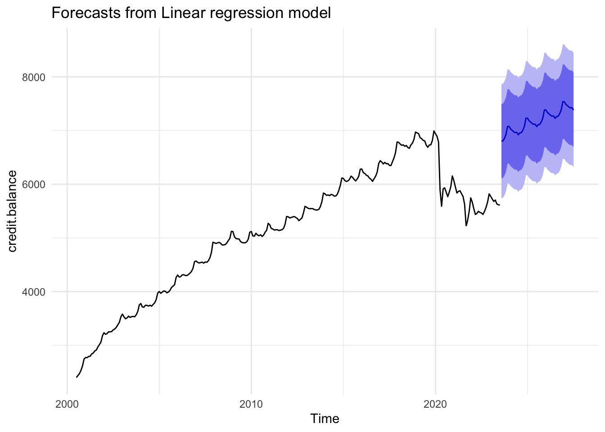
cbfit |> tidy() Warning: The `tidy()` method for objects of class `tslm` is not maintained by the broom team, and is only supported through the `lm` tidier method. Please be cautious in interpreting and reporting broom output.
This warning is displayed once per session.| term | estimate | std.error | statistic | p.value |
|---|---|---|---|---|
| (Intercept) | 3460.949 | 122.430 | 28.269 | 0.000 |
| trend | 12.771 | 0.395 | 32.358 | 0.000 |
| season2 | -60.206 | 154.786 | -0.389 | 0.698 |
| season3 | -96.978 | 154.787 | -0.627 | 0.532 |
| season4 | -137.532 | 154.790 | -0.889 | 0.375 |
| season5 | -164.651 | 154.793 | -1.064 | 0.288 |
| season6 | -175.292 | 154.798 | -1.132 | 0.258 |
| season7 | -232.007 | 153.165 | -1.515 | 0.131 |
| season8 | -209.839 | 154.798 | -1.356 | 0.176 |
| season9 | -215.827 | 154.793 | -1.394 | 0.164 |
| season10 | -181.642 | 154.790 | -1.173 | 0.242 |
| season11 | -119.718 | 154.787 | -0.773 | 0.440 |
| season12 | 14.728 | 154.786 | 0.095 | 0.924 |
Table 10 shows that the seasonal effects are highly significant. Figure 11 shows that the fitted model is not faring well for the year 2020, which was affected by COVID. The forecasts ahead are also untrustworthy.
Note that the time variable \(t\) becomes the predictor in the fitted model but the model is not based on the past or lagged \(Y\) data. The smoothing methods discussed below employ such past data.
Here we compute the mean of successive smaller sets of numbers of immediate past data. The period or length (also called span) of the moving average is the number of observations (including the present one) used for averaging. The general expression for the moving average \(M_t\) at time \(t\) is \[M_t = [X_t + X_{t-1} + ... + X_{t-N+1}] / N\] where \(X_t\) is the observation at time \(t\) and \(N\) the moving average length. Figure 12 shows the moving average smoothing for the ‘$20 Notes in public hands’ data. It can be noted that the degree of smoothing is directly related to the length of the moving average (i.e., longer the length, greater the smoothing).
NZnotes20 <- read_table(
"http://www.massey.ac.nz/~anhsmith/data/20dollar.txt") |>
pull(value) |>
ts(start=1968, frequency=1)MA.centred <- ma(NZnotes20, 2, centre = TRUE)
MA.noncentred <- ma(NZnotes20, 2, centre = FALSE)
library(forecast)
autoplot(NZnotes20) +
autolayer(MA.centred, series = "2 y MA centred") +
autolayer(MA.noncentred, series = "2 y MA noncentred", linetype=2)
When placing the moving averages against time, placing them in the middle time period is more appropriate. Strictly speaking the moving average must fall at \(t = 1.5, 2.5, 3.5\) etc when the period of the moving average is an even number. Hence we need to smooth again the moving average smoothed values to place the moving averages at \(t = 2, 3, 4\) etc. Figure 12 also compares the centred moving average smoothing and non-centred moving average smoothing (length 2) for the ‘$20 Notes in public hands’ data. It is easy to see that centring has stopped the moving averages from drifting below the original series and ‘lined’ them with the original data.
In moving average smoothing all past observations are given equal weight. In exponential average smoothing, past observations (i.e. as the observations become older) are given exponentially decreasing weights. That is, recent observations are given relatively more weight than the older observations. Hence the exponential smoothing method becomes a representative method to produce a smoothed time series. The average computed using exponentially decreasing weights is known as the Exponentially Weighted Moving average (EWMA). This fitted average is also called level because this method does not allow for trends or seasonality (and everything gets smoothed).
EWMA smoothing begins by setting \(S_0\) to \(x_1\) (usually), where \(S\) stands for smoothed observation (or EWMA), and \(x\) for the observation. The subscript in \(x\) refers to the time periods \(t =1, 2, ... ,n\). For the second period, \(S_2 = \alpha x_2 + (1-\alpha)x_1\) and so on. Here the parameter \(\alpha\) is called the smoothing constant, the weight given to the current observation. A general formula is also available to compute the EWMA for any time period \(t\). Figure 13 shows the single exponential smoothing on the $20 Notes series for \(\alpha=0.5\). Instead of fixing an \(\alpha\) value such as 0.5, we may leave it to the software to find an optimum value.
single.exp <- NZnotes20 |> ses(alpha=0.5) |> fitted()
p1 <- autoplot(NZnotes20) +
autolayer(single.exp, series ="alpha=0.5")
single.exp1 <- NZnotes20 |> ses() |> fitted()
p2 <- autoplot(NZnotes20) +
autolayer(single.exp1, series = "optimised alpha")
library(patchwork)
p1/p2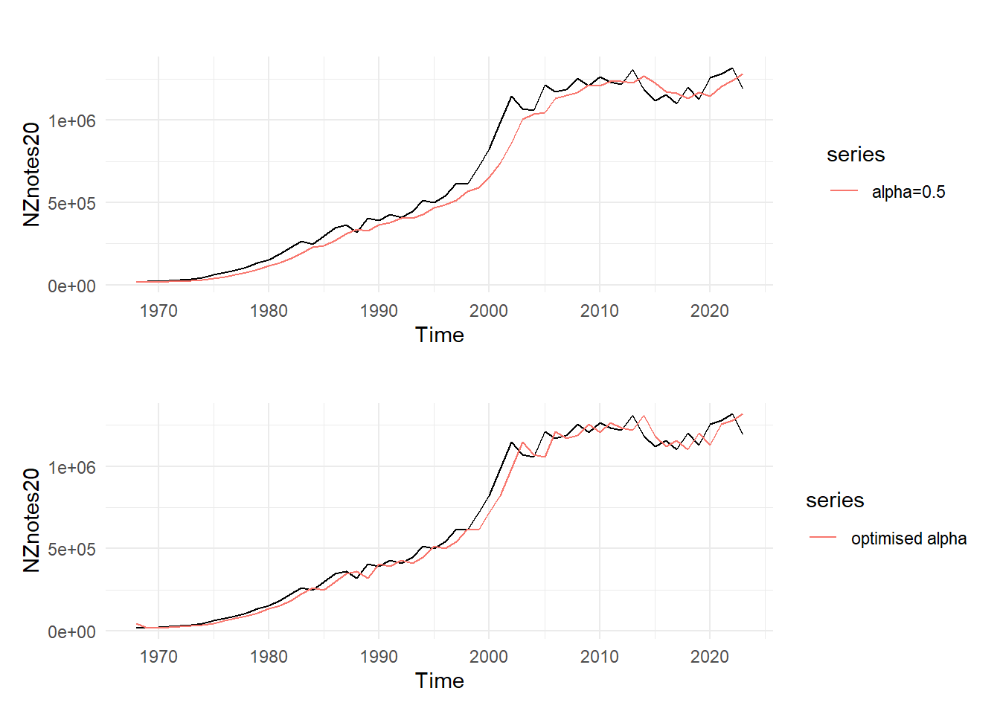
The rate at which the effect of older observations on the current EWMA will be dampened depends on \(\alpha\), the smoothing constant. Larger the \(\alpha\) value, faster the dampening effect of older observations.
A naive choice for the initial value for \(S_0\) (i.e. at the origin) is \(x_1\), the first observation. The other choices include the average of two or more successive observations, estimating using regression methods etc. In this course we will not be concerned with the choice of the initial values very much (and accept the defaults of the R packages).
Single exponential smoothing is improved to double exponential smoothing to account for the trend type of variations. This is achieved by introducing a second smoothing constant say \(\beta\). This weighting constant captures linear trends using the successive differences in the fitted EWMAs. The process of double exponential smoothing is conveniently represented by the following two equations.
\(S_t = \alpha X_t+(1-\alpha)[S_{t-1} + T_{t-1}]\) (called level equation)
where
\(T_t =\beta [S_t - S_{t-1}] + (1 -\beta)T_{t-1}\) (called trend equation).
The second equation for the trend EWMA gives a weight of \(\beta\) to the current differences in the EWMAs (i.e. \(S_t - S_{t-1}\)) and the balance weight \((1-\beta)\) to the preceding trend EWMA.
The main or usual EWMA (i.e. \(S_t\)) gives a weight of \(\alpha\) to the current observation and the balance weight \((1-\alpha)\) to the sum of preceding main and trend EWMAs (i.e. \(S_{t-1} + T_{t-1}\)). A naive choice for the initial value for \(T_0\) (i.e. at the origin) is \(x_2-x_1\), the difference between the first and the second observations. The other choices include the average of two or more successive differences, estimating using regression methods etc. In this course we will not be concerned with the choice of the initial values very much. The smoothing constants \(\alpha\) and \(\beta\) are obtained by non-linear optimisation methods (such as the Marquardt algorithm). In this course, we will just accept the R outputs as the optimised fits. Figure 14 shows the double exponential smoothing on the $20 Notes series with optimum \(\alpha\) and \(\beta\) (as determined by the forecast package).
double.exp <- NZnotes20 |> holt() |> fitted()
autoplot(NZnotes20) +
autolayer(double.exp, series = "DEWMA-optimised")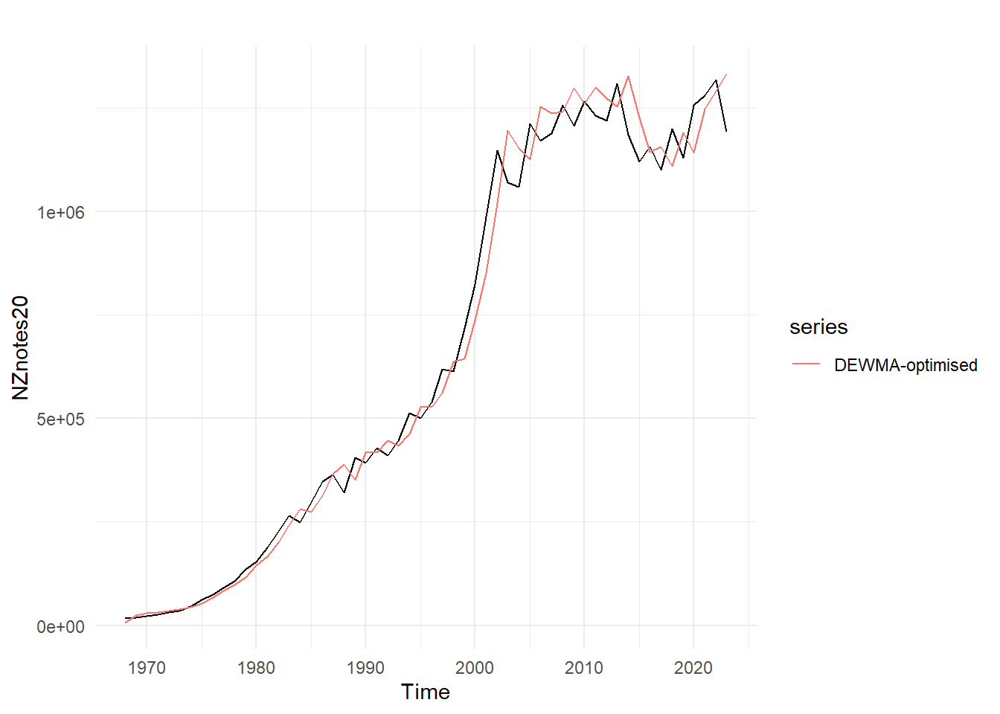
This approach developed by Holt and Winter (hence the name Holts-Winter (HW) smoothing) employs a level equation, a trend equation, and a seasonal equation for smoothing at each time period. Hence three weights, or smoothing parameters are needed.
\(S_t = \alpha(X_t-P_{t-p}) + (1-\alpha)[S_{t-1}+T_{t-1}]\) (level equation)
\(T_t = \beta [S_t-S_{t-1}]+ 1-\beta)T_{t-1}\) (trend equation)
\(P_t = \phi (X_t-S_t)+(1-\phi)P_{t-p}\) (seasonal equation of a given period \(p\))
The smoothing parameters \(\alpha\), \(\beta\), and \(\phi\) are constants and are usually estimated minimising the MSE. In order to proceed with the triple exponential smoothing, we need at least one complete season’s data to determine initial estimates of the seasonal indices. For estimating the trend components, it is preferable to have at least two complete season’s data.
The initial trend is usually estimated using the average differences in the corresponding observations in two adjacent seasons. The estimating initial values for seasonal components, we use the averages rather than differences. Regression methods are also employed for estimating the initial values. In this course, we will not study the estimation methods for initial values in any detail but will accept computations and optimisation reported in the forecast R package. Figure 15 shows the triple exponential smoothing to the outstanding credit card balances series.
library(forecast)
trp.exp <- credit.balance |> hw() |> fitted()
autoplot(credit.balance) +
autolayer(trp.exp,
series = "Holt-Winter- optimised")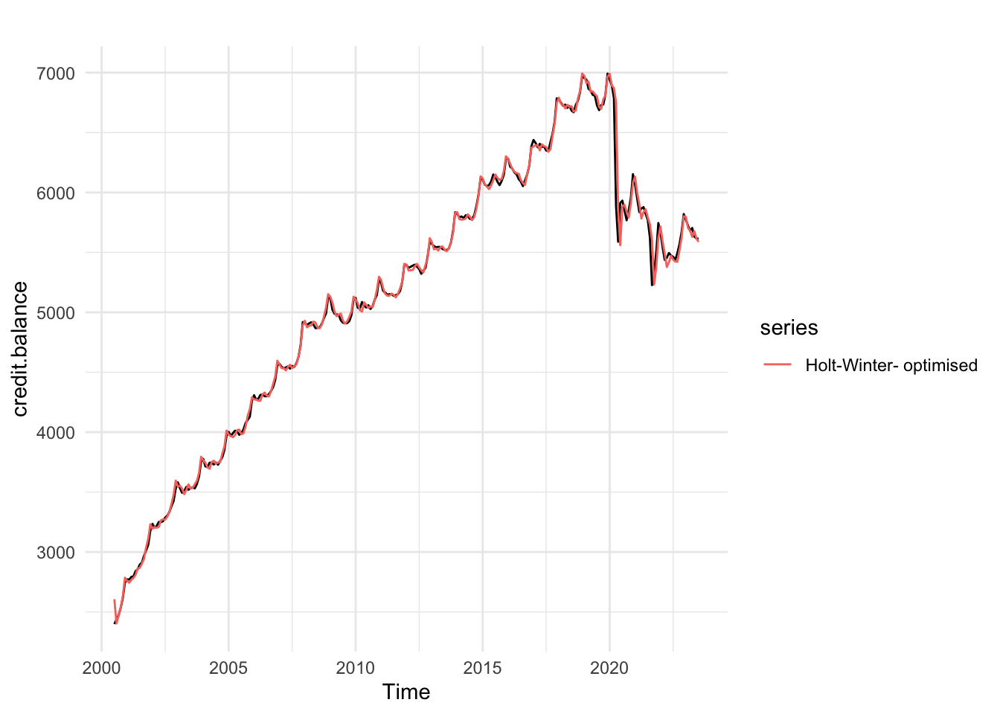
Forecast accuracy measures such as MSE are useful for fixing the smoothing parameters such as the moving average length or the EWMA smoothing constant. We may minimise MSE (say) to fix a value for the EWMA smoothing constant. This can be done by trial and error or by nonlinear optimisation methods (such as Marquardt’s procedure).
By the term forecasting, we mean projecting the present time series for future time points. For example, assume that we used an uncentered two period moving average to smooth the ‘$20 Notes’ time series. The moving average value (non-centred) for 1969 is 18.05. A naive approach to forecasting will be to use the smoothed value at time \((t-1)\) to forecast for time \(t\). Hence the forecasted value (or simply forecast) of $20 bills for 1970 would be 18.05 as against the actual observed value of 21.76. In the absence of Year 1970 data, the same value 18.05 would be the forecast for 1971 and so on. MAs are not useful for forecasting in general and hence this average is just employed to fit trends or extract trends when seasonal variation is absent.
For EWMA Forecasting, the forecast approach is to add an adjustment for the error that occurred in the last forecast. We again consider ‘$20 Notes’ time series and obtain the EWMA smoothed values for \(\alpha = 0.4\). For the year 1969 (say), the EWMA value is 17.78 as against the actual value 19.41 giving an error of 19.41- 17.78= 2.72. This error is given a weight of 0.4 and added to the 1969 forecast (naive estimate) of 16.69 as \(16.69+0.4\times2.72\) giving a forecast value of 17.78 for 1970. The term ‘adjustment error’ will refer to \(0.4\times2.72 = 1.088\). This forecast value is also obtained as
Forecast for \(1970 = 0.4\times19.41+0.6\times16.69= 17.78\).
(from the relationship \(S_{t+1}=\alpha x_{t+1}+(1-\alpha)S_t\) where the unavailable value \(X_{t+1}\) is replaced by the naive estimate \(X_t\)). This forecasting approach is also not useful in the presence of trend etc. Hence only a forecast of one time period ahead is usually done. For forecasting two or more time periods ahead, methods such as double and triple exponential smoothing are more useful.
If we perform the double exponential forecasting for some \(m\) periods ahead from a point at time \(t\), the trend part of EWMA, \(T_t\), will be added \(m\) times to the naive level estimate \(S_t\). As shown in Figure 16, the double exponential smoothing approach provides no nonsense forecasts compared to the naive single exponential forecasts in the presence of trends. The fit/forecast quality measures such as the MSE, MAD etc will also be smaller for the double exponential smoothing in the presence of trends.
holt1 <- holt(credit.balance)
holt2 <- hw(credit.balance)
p0 <- forecast::autoplot(window(credit.balance, start=2012)) +
xlim(2012, 2025) + ylim(4500,7000) + ylab("")
p1 <- p0 + autolayer(holt1, series = "Double exponential")
p2 <- p0 + autolayer(holt2, series = "Triple exponential")
library(patchwork)
p1/p2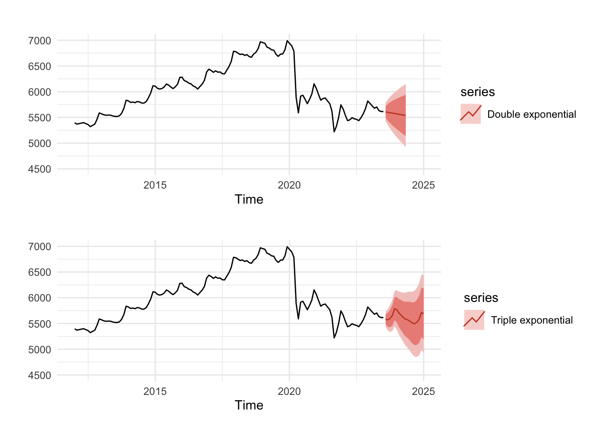
The forecast accuracy measures can also be obtained using the accuracy() function in the forecast package. This function also give a few other accuracy measures. For the credit card balances data, we obtain-
bind_cols(
Method = c(
"Double exponential smoothing",
"Triple exponential smoothing"
),
bind_rows(
accuracy(holt1)[,c(2,3,5)],
accuracy(holt2)[,c(2,3,5)]
)
)# A tibble: 2 × 4
Method RMSE MAE MAPE
<chr> <dbl> <dbl> <dbl>
1 Double exponential smoothing 88.5 51.3 0.993
2 Triple exponential smoothing 72.5 33.5 0.680Evidently the triple exponential smoothing fares well for our credit card balances data.
The concept of stationarity plays in important role for building time series models. In crude terms, a time series is said to be stationary if the mean and variance do not change over time (alternatively the same probability law applies over time). In fact stationarity is defined in a pure mathematical way but we will not worry about this in this course.
A white noise series is defined as a series with a constant mean and variance, and the true mean and variance remain the same for all \(t\). Normal random data is an example of white noise but the normal assumption is not required for a series to be white noise. You can also intuitively guess that a white noise series is stationary.
A quick collection of EDA displays can be obtained using a single function ggtsdisplay() or tsdisplay() in R. This display is shown for the white noise series in Figure 17.
set.seed(123)
wht.noise <- arima.sim(list(order=c(0,0,0)),500)
ggtsdisplay(wht.noise)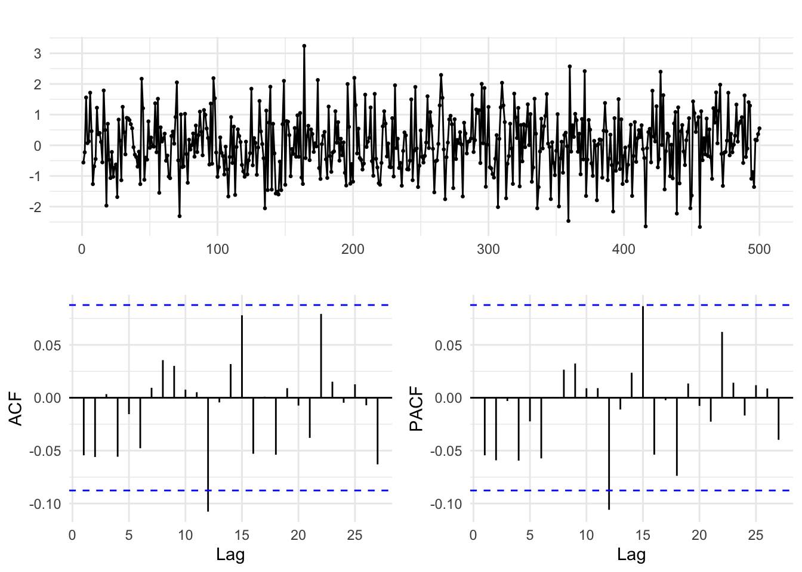
Time series modelling is not needed for a series such as this one. The above random series must be distinguished from a series whose autocorrelations are not decaying to zero or becoming significant frequently.
A drifting random walk series is defined as \[X_t = \delta + X_{t-1} + W_t \]
where \(\delta\) is the constant drift, and \(W_t\) is white noise which induces the random walk for the series. The mean function depends on \(t\) for this series and hence not stationary. This is not of concern because we can model the drift and make the residuals stationary. The trick is to model the difference \(X_{t} - X_{t-1}\) or just use the first lag \(X_{t-1}\) as a predictor in the usual regression.
set.seed(123)
rwd <- arima.sim(list(order=c(0,1,0)),500)
ggtsdisplay(rwd)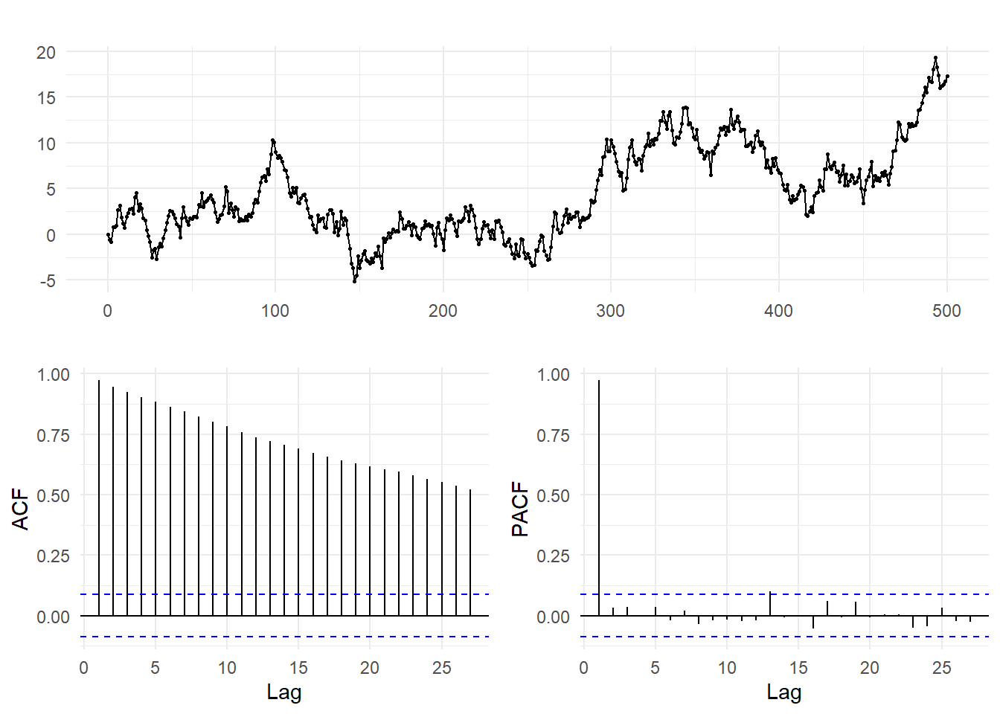
In Figure 18, it should also be noted that the ACFs decay to zero which is a good thing when compared to the case where ACFs are not decaying to zero.
\[X_t=\beta_0+\beta_1(\sin(\frac {2\pi}{12} t)+\beta_1(\cos(\frac {2\pi}{12} t)+\epsilon_t\] The above model introduces a 12-period seasonal pattern using \(\sin\) and \(\cos\) functions (which are periodic). The time series EDA plots for this function is obtained below:
t=1:500
set.seed(123)
Xt=sin(t*2*pi/12)+cos(t*2*pi/12)+rnorm(500)
ggtsdisplay(Xt)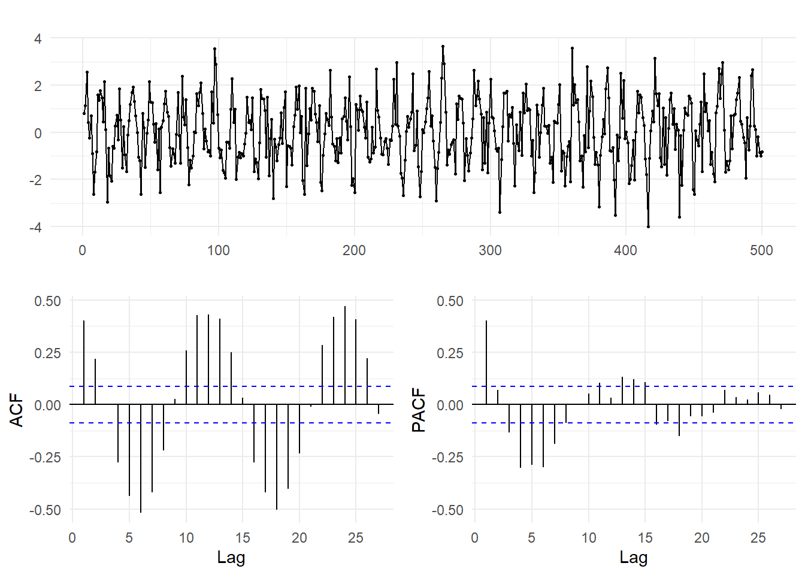
Note the periodical patterns in the EDA plots shown in Figure 19. Analysis of a time series using sine and cosine functions is known as frequency domain approach and is popular in meteorology, chemistry and geophysics. Instead of using trigonometric functions, say if indicator variables are used to model seasonality, we stay within the time domain. The autocovariance function in the time domain is analogous to the spectral density function in the frequency domain.
Consider the model \[X_t=\alpha_1 X_{t-1}+ \alpha_2 X_{t-2}+ \dots + \alpha_p X_{t-p} + \epsilon_t\]
This model is called the auto-regressive model of order \(p\) and called the \(AR(p)\) process. Under this model, we assume that the present value depends linearly on the immediate past values as well as a random error. Note that this model is very similar to the multiple regression model where the predictors are just the past values of the series. This \(AR(p)\) series is stationary if the variance of the terms are finite. When \(p = 1\) (the first-order process), the model is known as a Markov process. The EDA plots for random data from this process is shown in Figure 20. Figure 21 shows the \(AR(3)\) process EDA plots. Note that the PACF shows a pattern matching the parameters set ar= c(0.8, -0.7, .3). The last PACF in an \(AR(p)\) model accounts the excess autocorrelation at lag \(p\) that is not accounted for by an \(AR(p-1)\) model.
set.seed(123)
Xt <- arima.sim(list(order=c(1,0,0), ar=.6), n=500)
ggtsdisplay(Xt)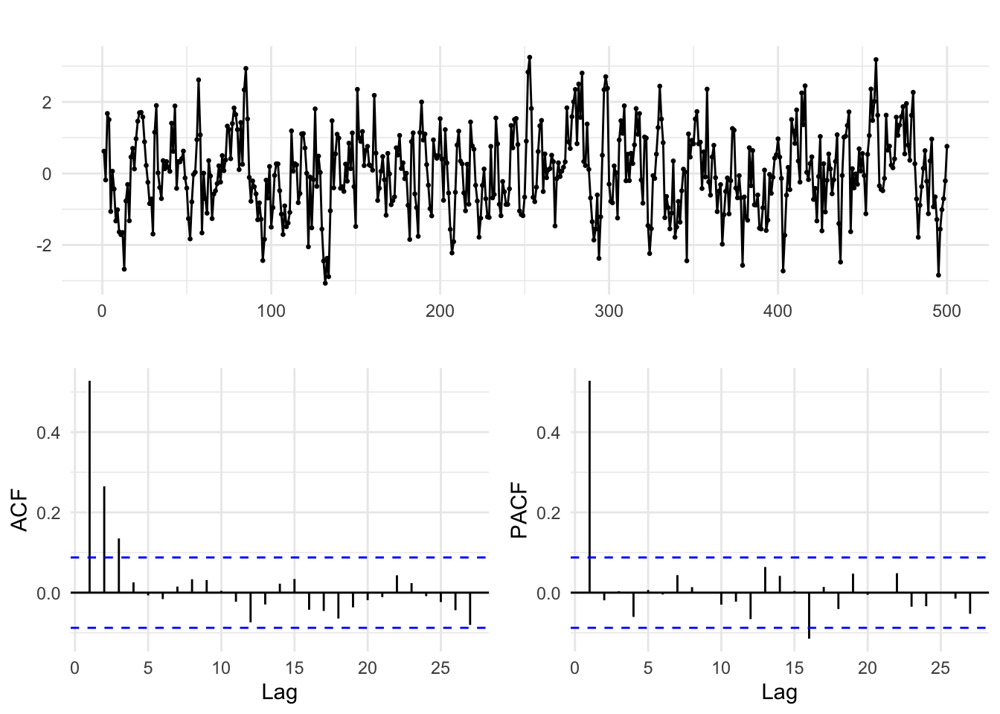
set.seed(123)
Xt <- arima.sim(list(order=c(3,0,0), ar= c(0.8, -0.7, .3)), n=500)
ggtsdisplay(Xt)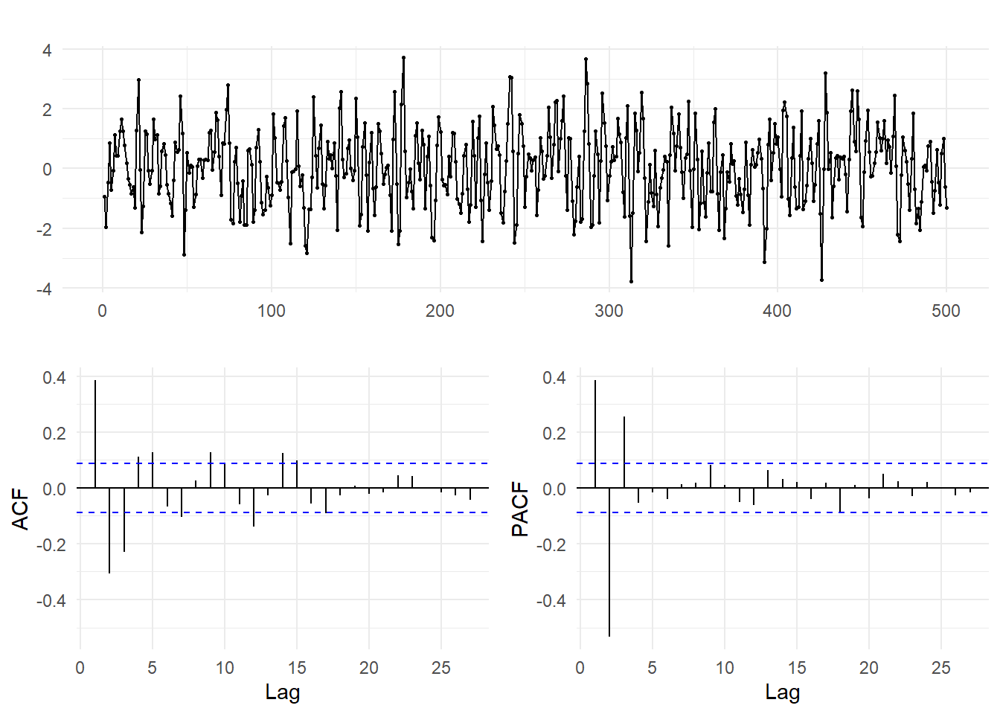
The moving average process for errors is defined by the following equation. \[X_t=\beta_0 z_{t}+ \beta_1 z_{t-1}+ \dots + \beta_q z_{t-q}\] Note that \(X_t\) is modelled with errors \(z_1\), \(z_2\),…, whose means are assumed to be zero and constant variance. The \(\beta\)s are coefficients of the model and \(q\) is the order. The mean of this \(MA(q)\) process is zero but we can always add some mean \(\mu\) which will not affect the properties such as ACFs. The basic idea behind the \(MA(q)\) process is that the current value of the response is due to variety of current and past unpredictable random events. It is proved that the moving average process is a stationary process and that the ACFs at lags greater than \(q\) are zero. Figure 22 and Figure 23 show the basic EDA plots for the \(MA(1)\) and \(MA(3)\) processes.
set.seed(123)
Xt <- arima.sim(list(order=c(0,0,1), ma=.6), n=500)
ggtsdisplay(Xt)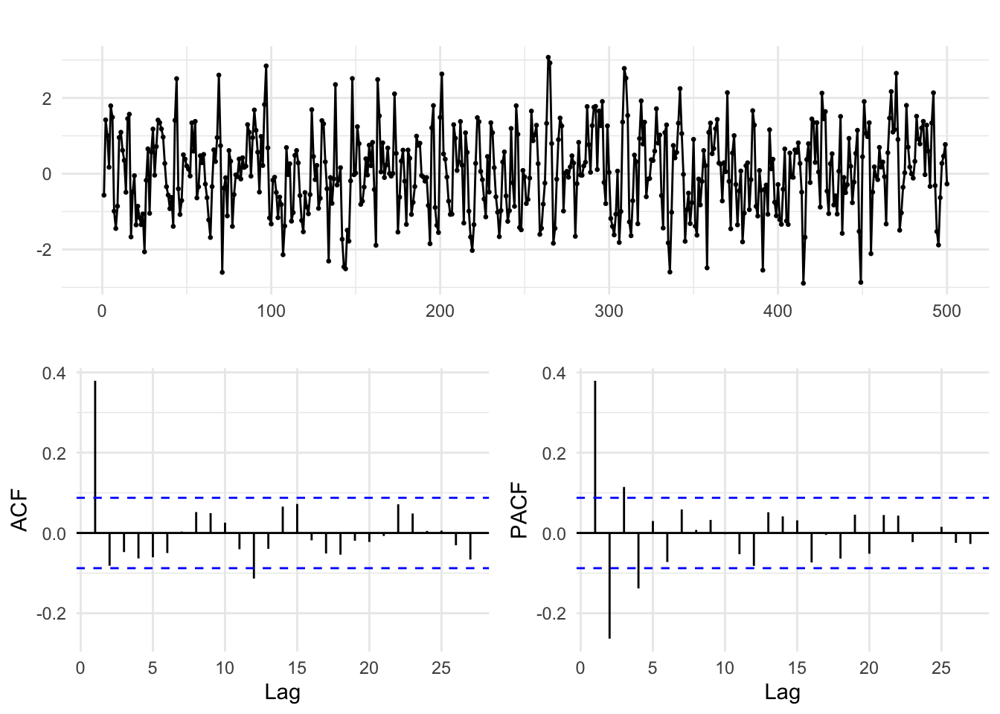
set.seed(123)
Xt <- arima.sim(list(order=c(0,0,3), ma=c(.3, .1, -.4)), n=500)
ggtsdisplay(Xt)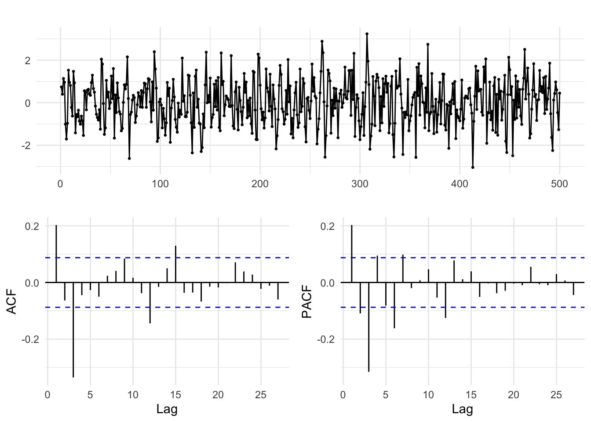
ARMA Model
The term \(ARMA(p, q)\) model refers to the following equation that combines both the \(AR(p)\) and \(MA(q)\) models.
\[X_t=\alpha_1 X_{t-1}+ \alpha_2 X_{t-2}+ \dots + \alpha_p X_{t-p} + \beta_o z_{t}+ \beta_1 z_{t-1}+ \dots + \beta_q z_{t-q}\] It is easy to see that the term \(\epsilon_t\) in the \(AR(p)\) model is replaced or expanded with the \(MA(q)\) model. You may wonder why to have such a complicated model. In fact the ARMA model requires fewer parameters than using just \(MA(q)\) or \(AR(p)\) model. \(ARMA(p, q)\) model is a stationary model. Figure 24 shows the EDA plots for the simulated series from the \(ARMA(2,2)\) process; note the constants fixed under the ar and ma parts of the arima.sim function and compare the ACF and PACF plots.
set.seed(123)
Xt <- arima.sim(list(order=c(2,0,2), ar=c(.5, -.3), ma=c(.3, .1)), n=500)
ggtsdisplay(Xt)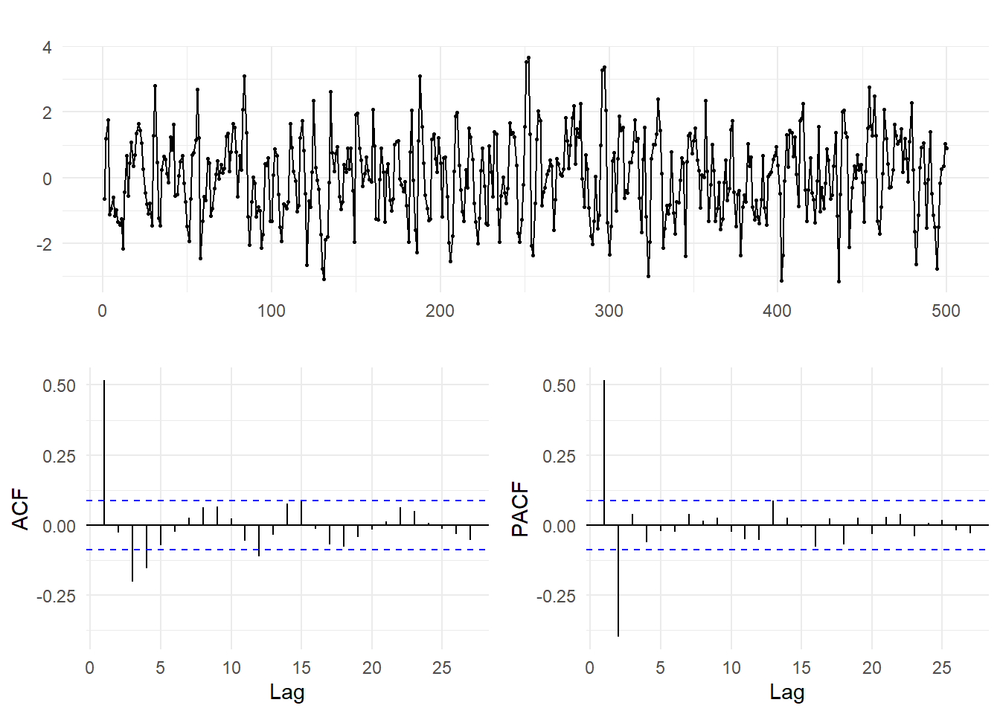
Fitting ARMA model Fitting an AR model can be done approximately using the multiple regression approach. If we use the sample mean \(\bar{X}\) to estimate the mean \(\mu\) of the process, the AR model becomes the multiple regression model with lags as predictors. However we cannot take the same approach to fitting ARMA models and we need to employ nonlinear optimisation methods.
After fitting the ARMA model, we perform diagnostics of the fitted model. Here we explore the residuals of the fitted model for randomness and periodicity. In order to avoid over fitting, we will also examine the standard errors of the fitted coefficients. The need for transformations such the logarithm or the square root will also be indicated by the residuals.
If the residuals are found to be nonstationary (often the case), we opt for differencing of the series. We have briefly seen that differencing can bring stationarity to a drifting process. Formally, the first difference \(X_t-X_{t-1}\) is denoted as \(\bigtriangledown X_t\). If we perform the differencing of the differences, we obtain \(\bigtriangledown^2 X_t\) and so on. In order to bring stationarity to residuals, we may do differencing \(d\) times. We then fit the model to \(\bigtriangledown^2 X_t\) instead of \(X_t\). This model is known as an autoregressive integrated moving average (ARIMA) model and denoted as \(ARIMA(p, d, q)\). The term “integrated” means that the stationary model that was fitted based on the differenced data has to be summed (or “integrated”) to provide a model for the original data.
The ARIMA model is further generalised to seasonal ARIMA (SARIMA) model. The AR part for seasons (parameter P), differencing part (D) and the MA part (Q) form part of the \(SARIMA(p,d,q ,P, D, Q)\). This topic is covered in higher level courses.
Building good ARIMA models of Box and Jenkins (1976) generally requires a reasonable amount of experience compared to building models to cross-section data. In this course you are expected not to build ARIMA models (no exam questions). But it should not be too hard to recognise the situations such as seasonality in the data series using EDA tools.
The R package forecast has a convenient function called auto.arima which can quickly fit an ARIMA model. This is just an initial model which must be improved further. For the credit balance data, we obtain the following output:
auto.arima(credit.balance)Series: credit.balance
ARIMA(0,2,4)(0,0,2)[12]
Coefficients:
ma1 ma2 ma3 ma4 sma1 sma2
-0.6271 -0.5941 0.0977 0.1389 0.2602 0.1775
s.e. 0.0608 0.0729 0.0683 0.0636 0.0623 0.0570
sigma^2 = 5817: log likelihood = -1581.39
AIC=3176.78 AICc=3177.2 BIC=3202.1This package can also generate forecasts easily, see Figure 25. This plot also shows the confidence bands for the forecasts.
fit <- auto.arima(credit.balance)
forecast::autoplot(forecast(fit,h=24))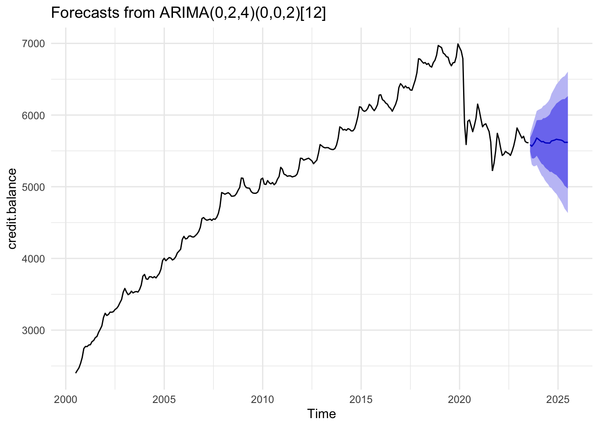